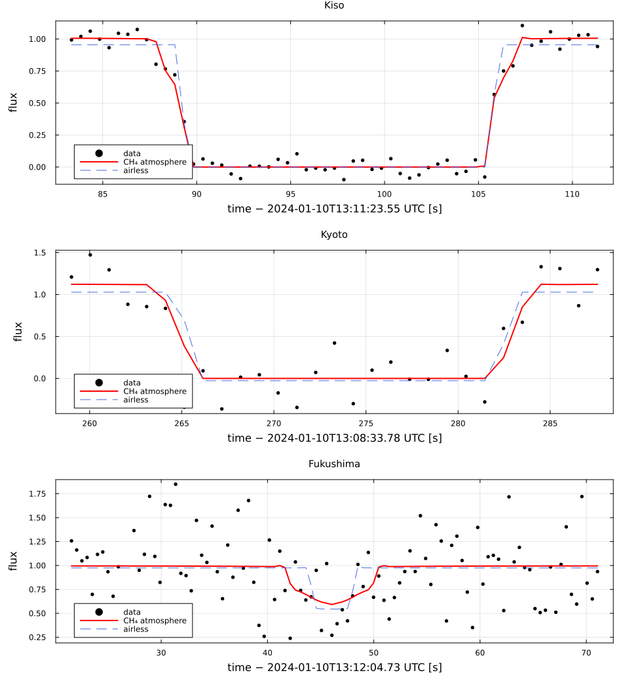
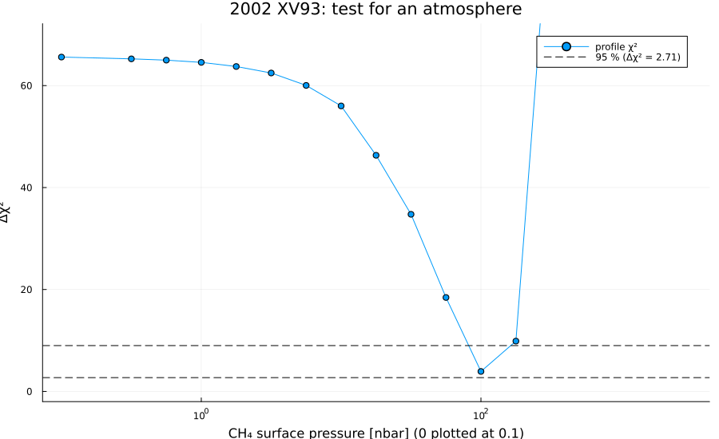
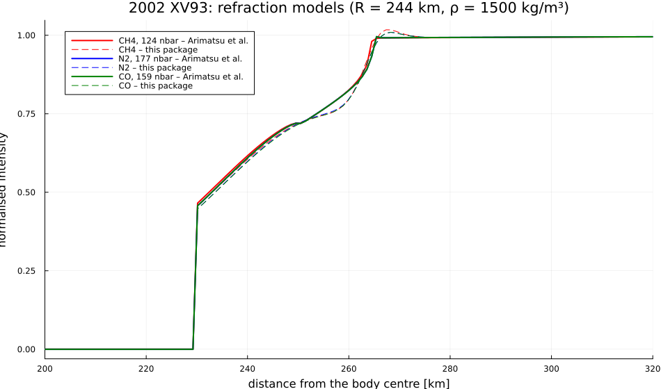

2002 XV93, 2024 January 10
The stellar occultation by (612533) 2002 XV93 on 2024 January 10, a TNO with an atmosphere, reduced from the original light curves of Arimatsu et al. (2026), Nature Astronomy, "Detection of an atmosphere on a trans-Neptunian object beyond Pluto". The light curves and the authors' model profiles are their dataset on Zenodo (Arimatsu et al., 2026) (CC BY 4.0), copied to examples/data/2002xv93_zenodo/. There are two positive chords (Kyoto, Kiso), a near miss (Fukushima), and a refractive signature at the shadow edges, interpreted as an atmosphere of 100–200 nbar.
The example covers:
- the timings of the Kyoto and Kiso light curves with the diffraction model;
- the circular shadow from the chords, and the distances of the stations from its centre;
- the atmosphere model of the paper (47 K, +2.7 K/km up to 20 km, free molecular flow above 25 km), ray-traced with this package and compared with the authors' model profiles (rms 0.01);
- a joint fit of the three light curves with the limb and the atmosphere (CH₄, N₂, CO), and the airless model;
- the test for an atmosphere (profile likelihood in the surface pressure).
| Kiso duration (s) | p CH₄ (nbar) | p N₂ (nbar) | p CO (nbar) | Δχ² airless | |
|---|---|---|---|---|---|
| Arimatsu et al. (2026) | 16.53 ± 0.08 | 124 +15 −12 | 177 +18 −19 | 159 +15 −17 | 60.5 (Kiso) |
| this package | 16.53 ± 0.04 | 129.3 ± 12.3 | 185.3 ± 19.9 | 166.1 ± 20.1 | 65 (3 light curves), 8.1σ |
The data are in examples/data/2002xv93_20240110.jl; the script runs offline:
julia --project=. examples/2002xv93_2024.jl [output_dir] (default: examples/output/2002xv93_2024)The code is not run when the manual is built. The output after each section is that of the last run of examples/2002xv93_2024.jl, stored in examples/output/2002xv93_2024/output.txt.
using Occultations, Random, Printf, Statistics, LinearAlgebra
using Plots
import CairoMakie # saves the GeoMakie maps (Makie figures)
include(joinpath(@__DIR__, "standard_figures.jl"))
include(joinpath(@__DIR__, "data", "2002xv93_20240110.jl"))
out = length(ARGS) >= 1 ? ARGS[1] : mkpath(joinpath(@__DIR__, "output", "2002xv93_2024"))
rng = MersenneTwister(2024)
P = XV93_PAPEREvent and geometry (paper values in parentheses)
star, body = xv93_star(), xv93_body()
ev = Event(star, body, P.fukushima_ca_time; window=900, name="2002 XV93, 2024-01-10")
D, v = ev.ca.dist_km, ev.ca.vel
sd = apparent_diameter(star, D)
@printf("distance %.2f au (%.1f), shadow velocity %.2f km/s (%.1f), stellar diameter %.3f km, Fresnel scale %.2f km at 0.6 µm\n",
D / 1.495978707e8, P.distance_au, v, P.velocity, sd, fresnel_scale(0.6, D))distance 37.04 au (37.0), shadow velocity 25.17 km/s (25.2), stellar diameter 0.086 km, Fresnel scale 1.29 km at 0.6 µm1. Timings from the light curves (diffraction, stellar diameter, exposure)
lcs = Dict(n => xv93_lightcurve(n) for (n, _...) in XV93_STATIONS)
timing = Dict{String,Any}()
for n in ("Kiso", "Kyoto")
lc = lcs[n]
d = detect_occultation(lc)
vn = v * sqrt(1 - (P.closest_approach[n][1] / P.circle_radius[1])^2) # velocity normal to the limb
tf = fit_timing(lc; vel=vn, dist=D, star_diam=sd, tmin=d.immersion - 30, tmax=d.emersion + 30, rng=rng)
timing[n] = tf
ct = contact_times(tf)
@printf("%-6s immersion %s ± %.3f s, emersion %s ± %.3f s, duration %.3f ± %.3f s (%.2f ± %.2f s), χ²/dof %.2f\n",
n, isot(ct.immersion; digits=3)[12:end], ct.immersion_err, isot(ct.emersion; digits=3)[12:end],
ct.emersion_err, timing[n][:duration]..., P.durations[n]..., reduced_chi2(tf))
end
for n in ("Kiso", "Kyoto")
push!(ev, Chord(n, xv93_station(n).observer, timing[n]; sensitivity=xv93_station(n).exptime))
end
push!(ev, Chord("Fukushima", xv93_station("Fukushima").observer, lcs["Fukushima"]; sensitivity=0.49))Kiso immersion 13:12:52.817 ± 0.029 s, emersion 13:13:09.346 ± 0.031 s, duration 16.528 ± 0.043 s (16.53 ± 0.08 s), χ²/dof 1.59
Kyoto immersion 13:12:58.230 ± 0.322 s, emersion 13:13:16.134 ± 0.313 s, duration 17.904 ± 0.451 s (18.00 ± 0.90 s), χ²/dof 1.132. Circular shadow from the four chord extremities
rc = fit_limb(ev; model=CircleLimb(), residual=:radial, rng=rng)
@printf("radius %.1f ± %.1f km (paper %.0f +%.0f −%.0f km), χ²/dof = %.2f for %d dof (paper χ² = %.2f)\n",
rc[:radius]..., P.circle_radius..., reduced_chi2(rc), rc.dof, P.circle_chi2)
c0 = (rc[:center_f][1], rc[:center_g][1])
for n in ("Kyoto", "Kiso", "Fukushima")
tr = track(ev, n)
τs = range(tr.τmin, tr.τmax; length=4001)
dmin, k = findmin([hypot(tr(τ)[1] - c0[1], tr(τ)[2] - c0[2]) for τ in τs])
@printf(" %-10s closest to the centre at %s UTC, %6.1f km (paper %.0f +%.0f −%.0f km)\n", n,
isot(ev.tref + τs[k]; digits=2)[12:end], dmin, P.closest_approach[n]...)
end
println(" (paper: Fukushima closest at ", P.fukushima_ca_time[12:end], " UTC)")radius 230.8 ± 8.7 km (paper 235 +22 −15 km), χ²/dof = 5.63 for 1 dof (paper χ² = 1.40)
Kyoto closest to the centre at 13:13:07.78 UTC, 31.6 km (paper 41 +45 −41 km)
Kiso closest to the centre at 13:13:01.07 UTC, 93.5 km (paper 103 +45 −43 km)
Fukushima closest to the centre at 13:12:50.80 UTC, 245.4 km (paper 255 +45 −43 km)
(paper: Fukushima closest at 13:12:50.818 UTC)3. The atmosphere model: this package vs the authors' best-fit profiles
R, gm = P.radius_atm[1], body_gm(body)
cmp = Dict{Symbol,Any}()
for (gas, pdict, ρ) in ((:CH4, P.pressure, 1500), (:N2, P.pressure, 1500), (:CO, P.pressure, 1500),
(:CH4, P.pressure_rho1000, 1000), (:N2, P.pressure_rho1000, 1000), (:CO, P.pressure_rho1000, 1000))
r, I = xv93_model_profile(gas, ρ)
gmρ = gm * ρ / P.density
p = atmosphere_profile(xv93_atmosphere(gas), pdict[gas][1], R, gmρ, D; λ=0.6, Δλ=0.0, star_diam=0.0)
ours = [x >= p.y_surface ? Occultations._refracted_flux(p, x) : 0.0 for x in r]
k = findall(x -> 200 < x < 320, r)
ρ == 1500 && (cmp[gas] = (r, I, ours))
@printf("%-4s ρ = %d kg/m³, %3.0f nbar: rms Δ = %.4f, max |Δ| = %.3f; shadow edge %.1f km (paper's profile: %.1f km)\n",
gas, ρ, pdict[gas][1], sqrt(mean(abs2, ours[k] .- I[k])), maximum(abs.(ours[k] .- I[k])), p.y_surface,
r[findfirst(>(0), I)])
endCH4 ρ = 1500 kg/m³, 124 nbar: rms Δ = 0.0096, max |Δ| = 0.035; shadow edge 229.9 km (paper's profile: 230.1 km)
N2 ρ = 1500 kg/m³, 177 nbar: rms Δ = 0.0086, max |Δ| = 0.032; shadow edge 229.9 km (paper's profile: 230.1 km)
CO ρ = 1500 kg/m³, 159 nbar: rms Δ = 0.0093, max |Δ| = 0.034; shadow edge 229.7 km (paper's profile: 230.1 km)
CH4 ρ = 1000 kg/m³, 131 nbar: rms Δ = 0.0423, max |Δ| = 0.459; shadow edge 229.3 km (paper's profile: 231.1 km)
N2 ρ = 1000 kg/m³, 181 nbar: rms Δ = 0.0412, max |Δ| = 0.454; shadow edge 229.9 km (paper's profile: 231.1 km)
CO ρ = 1000 kg/m³, 163 nbar: rms Δ = 0.0414, max |Δ| = 0.454; shadow edge 229.6 km (paper's profile: 231.1 km)4. Joint fit of the light curves: limb + atmosphere
The parts of the light curves near the shadow are used: ±6 s around the contacts of Kyoto and Kiso, ±25 s around the closest approach of Fukushima.
function window(lc, t1, t2)
a, b = t1 - lc.tref, t2 - lc.tref
k = (lc.time .>= a) .& (lc.time .<= b)
return LightCurve(lc.name, lc.tref, lc.time[k], lc.flux[k], lc.σ[k], lc.optics)
end
evp = Event(star, body, P.fukushima_ca_time; window=900, name="2002 XV93, 2024-01-10 (light curves)")
for n in ("Kiso", "Kyoto")
ct = contact_times(timing[n])
push!(evp, Chord(n, xv93_station(n).observer, window(lcs[n], ct.immersion - 6, ct.emersion + 6)))
end
tF = Epoch(P.fukushima_ca_time)
push!(evp, Chord("Fukushima", xv93_station("Fukushima").observer, window(lcs["Fukushima"], tF - 25, tF + 25)))
npts = sum(length(c.lightcurve) for c in evp.chords)The χ² surface has several minima: radius and centre trade off across the chords. Search deterministically from a grid of starting radii and centres shifted across the chords, and keep the lowest χ².
fk, gk = chord_path(ev, ev["Kiso"])
e = normalize([fk[end] - fk[1], gk[end] - gk[1]]); n⊥ = [-e[2], e[1]]
grid = [(c0[1] + d * n⊥[1], c0[2] + d * n⊥[2], r0) for d in (-30.0, 0.0, 30.0) for r0 in (220.0, 235.0, 250.0, 265.0)]
function bestfit(starts; kw...)
best = nothing
for st in starts
r = try
fit(LimbProblem(evp; model=CircleLimb(), photometry=true, init=st, kw...); starts=1, rng=rng)
catch
nothing
end
r !== nothing && (best === nothing || r.chi2 < best.chi2) && (best = r)
end
return best
end
start(f, g, r; kw...) = Dict(:center_f => f, :center_g => g, :radius => r, kw...)
r_air = bestfit([start(x...) for x in grid])
@printf("%d light-curve points; %d starting points\n", npts, length(grid))
@printf("airless (diffraction + stellar diameter): R = %5.1f ± %.1f km χ² = %6.1f, dof = %d\n",
r_air[:radius]..., r_air.chi2, r_air.dof)
fits = Dict{Symbol,Any}()
for gas in (:CH4, :N2, :CO)
atm = xv93_atmosphere(gas)
p0 = P.pressure[gas][1]
starts = if gas === :CH4
[start(x...; pressure=p0) for x in grid]
else # from the CH₄ solution and nominal starts
c = fits[:CH4]
[start(c[:center_f][1], c[:center_g][1], c[:radius][1]; pressure=c[:pressure][1] * p0 / P.pressure[:CH4][1]),
start(c0..., R; pressure=p0), start(r_air[:center_f][1], r_air[:center_g][1], R; pressure=p0)]
end
r = bestfit(starts; atmosphere=atm)
fits[gas] = r
@printf("%-4s atmosphere: R = %5.1f ± %.1f km, p = %5.1f ± %4.1f nbar (paper %.0f +%.0f −%.0f) χ² = %6.1f, dof = %d\n",
gas, r[:radius]..., r[:pressure]..., P.pressure[gas]..., r.chi2, r.dof)
endThe radius trades off against the centre across the chords. The χ² profile in the radius:
Rs = collect(222.0:4.0:250.0)
_, χR = profile(fits[:CH4], :radius; values=Rs)
println("χ² profile in the radius (CH₄; centre and pressure refitted): the radius is only loosely constrained")
println(" R [km]: ", join([@sprintf("%6.0f", x) for x in Rs], ""))
println(" Δχ²: ", join([@sprintf("%6.1f", x - fits[:CH4].chi2) for x in χR], ""))
@printf("Δχ² airless − CH₄ = %.1f (paper, Kiso alone: %.1f − %.1f = %.1f)\n", r_air.chi2 - fits[:CH4].chi2,
P.chi2_airless, P.chi2_atm[:CH4], P.chi2_airless - P.chi2_atm[:CH4])
@printf("paper: R = %.0f ± %.0f km from the Kiso light curve alone, χ² %.1f for %d dof\n", P.radius_atm..., P.chi2_atm[:CH4],
P.dof_atm)188 light-curve points; 12 starting points
airless (diffraction + stellar diameter): R = 220.0 ± 0.9 km χ² = 229.0, dof = 179
CH4 atmosphere: R = 235.2 ± 2.0 km, p = 129.3 ± 12.3 nbar (paper 124 +15 −12) χ² = 171.3, dof = 178
N2 atmosphere: R = 235.1 ± 1.9 km, p = 185.3 ± 19.9 nbar (paper 177 +18 −19) χ² = 171.2, dof = 178
CO atmosphere: R = 235.1 ± 2.2 km, p = 166.1 ± 20.1 nbar (paper 159 +15 −17) χ² = 171.1, dof = 178
χ² profile in the radius (CH₄; centre and pressure refitted): the radius is only loosely constrained
R [km]: 222 226 230 234 238 242 246 250
Δχ²: 46.3 13.7 2.7 0.3 0.8 0.8 0.1 2.2
Δχ² airless − CH₄ = 57.7 (paper, Kiso alone: 89.2 − 28.7 = 60.5)
paper: R = 244 ± 1 km from the Kiso light curve alone, χ² 28.7 for 29 dofTest for an atmosphere (profile likelihood in the CH₄ surface pressure)
initt = Dict(:center_f => fits[:CH4][:center_f][1], :center_g => fits[:CH4][:center_g][1],
:radius => fits[:CH4][:radius][1], :pressure => fits[:CH4][:pressure][1])
inita = Dict(:center_f => r_air[:center_f][1], :center_g => r_air[:center_g][1], :radius => r_air[:radius][1])
t95 = atmosphere_test(evp; atmosphere=xv93_atmosphere(:CH4), init=initt, airless_init=inita, rng=rng)
@printf("best p = %.0f nbar; detection %.1fσ (Δχ² against p = 0: %.1f); 95 %% interval %.0f – %.0f nbar\n",
t95.pressure, t95.significance, t95.chi2_airless - t95.chi2_min, t95.interval...)
t3 = atmosphere_test(evp; atmosphere=xv93_atmosphere(:CH4), confidence=0.99865, pressures=t95.pressures, init=initt,
airless_init=inita, rng=rng)
@printf("3σ (one-sided 99.865 %%) interval %.0f – %.0f nbar\n", t3.interval...)best p = 129 nbar; detection 8.1σ (Δχ² against p = 0: 64.9); 95 % interval 104 – 157 nbar
3σ (one-sided 99.865 %) interval 81 – 176 nbarFigures
pl = plot(; xlabel="distance from the body centre [km]", ylabel="normalised intensity", size=(950, 560), legend=:topleft,
title="2002 XV93: refraction models (R = 244 km, ρ = 1500 kg/m³)", xlims=(200, 320))
for (gas, col) in ((:CH4, :red), (:N2, :blue), (:CO, :green))
r, I, ours = cmp[gas]
plot!(pl, r, I; color=col, linewidth=2, label="$gas, $(Int(P.pressure[gas][1])) nbar – Arimatsu et al.")
plot!(pl, r, ours; color=col, linestyle=:dash, label="$gas – this package")
end
savefig(pl, joinpath(out, "2002xv93_model_profiles.png"))
plots = map(("Kiso", "Kyoto", "Fukushima")) do n
lc = evp[n].lightcurve
p = plot(lc; title=n, titlefontsize=10, legend=:bottomleft, markersize=3)
plot!(p, model_lightcurve(fits[:CH4], n)...; label="CH₄ atmosphere", linewidth=2, color=:red)
plot!(p, model_lightcurve(r_air, n)...; label="airless", linestyle=:dash, color=:royalblue)
end
savefig(plot(plots...; layout=(3, 1), size=(950, 1050)), joinpath(out, "2002xv93_lightcurves.png"))
pt = plot(max.(t95.pressures, 0.1), t95.chi2 .- t95.chi2_min; xscale=:log10, marker=:circle, label="profile χ²",
xlabel="CH₄ surface pressure [nbar] (0 plotted at 0.1)", ylabel="Δχ²", title="2002 XV93: test for an atmosphere",
size=(900, 550), ylims=(-2, max(30, 1.1 * (t95.chi2_airless - t95.chi2_min))))
hline!(pt, [2.71, 9]; linestyle=:dash, color=[:black :gray], label=["95 % (Δχ² = 2.71)" "3σ (Δχ² = 9)"])
savefig(pt, joinpath(out, "2002xv93_atmosphere_test.png"))
savefig(plot(timing["Kiso"]; title="Kiso: timing fit (diffraction model)"), joinpath(out, "2002xv93_timing_kiso.png"))
savefig(plot(rc; title="2002 XV93: chords and circular fit", size=(900, 650)), joinpath(out, "2002xv93_chords.png"))
# the standard figures: limb fits (default, 68.3 % region, as the paper), posterior, maps (prediction,
# post-fit, comparison) and the globe
standard_figures("2002xv93", rc; out=out, posterior=nothing,
projection="+proj=laea +lon_0=138 +lat_0=36", limits=(126, 150, 28, 45), window=600, marks=30)
println("figures written to ", out)The three light curves with the CH₄ atmosphere and the airless model, and the test for an atmosphere (both explained in Atmospheres):


The refraction models of this package against the authors' profiles:

The results are discussed in Comparison with published reductions.